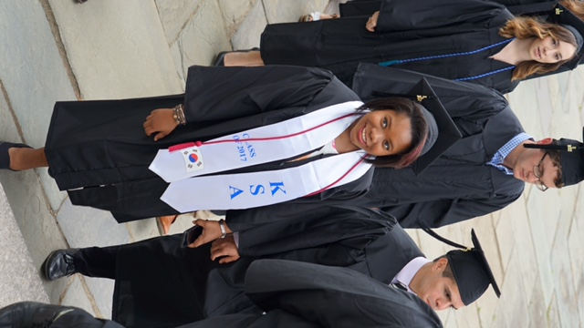

Cornell Tech, Cornell University

- Master's of Engineering in Computer Science
- Courses: Algorithms & Data Structures, Security and Privacy Concepts in the Wild, HCI and Design, Natural Language Programming, Privacy in the Digital Age, Networks and Marketing
- Extracurriculars: BreakThrough Tech Fellow; Cornell Tech Student Ambassador; Web Coordinator for Cornell Institute for Healthy Futures; Merit Scholar Recipient
- I talk more in detail about my experience at Cornell Tech through this featured article here.
Amherst College

- Major: Computer Science and Asian Languages and Civilizations
CS Courses: Data Structures & Algorithms, Computer Systems, Advanced Operating Systems, Principles of Database Design, Machine Learning
- Asian Lang & Civ Courses: Mandarin Chinese I-IV, Korean I-III, Business Korean 497, Power and Politics in Contemporary China, Perspecitive on Chinese History, Chinese Literature and Poetry
- Natural Languages: Mandarin Chinese, Korean
- Extracurriculars: Editor-in-Chief/Campus Correspondent, Her Campus Amherst; Secretary (2015) Vice President (2016), Korean Student Association; Member, Women in CS